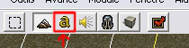
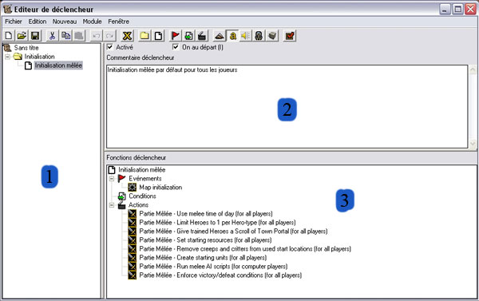
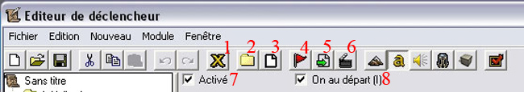
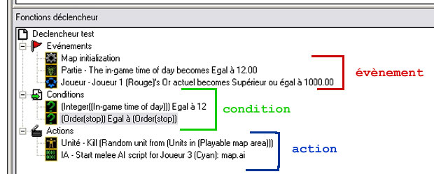
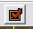
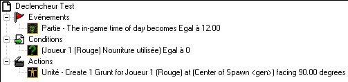

Dans ce tutoriel, nous nous intéresserons aux scénarios. En effet, je vous apprendrai les bases de l'éditeur de déclencheur ainsi que les fonctions fondamentales pour transformer votre map en vrai scénario ! Bien sûr ce ne sera pas digne d'un développeur de Blizzard mais vous pourrez déjà faire quelques petits trucs marrants. :D
Il est préférable d'avoir lu le tutoriel précédent (Les bases du mapping avec War3Editor) avant de commencer celui-là. Il vous apprendra les bases du maniement de cet outil très puissant et quasiment illimité (si si). :o
Ce chapitre peut paraître long mais j'essaie d'expliquer au mieux afin de favoriser votre compréhension des bases (le plus important !). Ce chapitre est essentiel pour bien débuter. :)
Je pense qu'on peut y aller, ouvrez votre éditeur ainsi que vos oreilles (ou plutôt les yeux c'est mieux) et à l'abordage (c'est à la mode le pirate ^^ ). :pirate:
Dans WarCraft III, il y a 2 types de map : les maps de mêlées et les mapsscénario.
>>> Une map de mêlée est une map basique avec des décors, des creeps, des mines et des emplacements de départ de joueurs (pratiques pour jouer :p ). Dès qu'un joueur ne possède plus de bâtiments, la partie est finie pour lui, etc. Bref les maps officielles sur lesquelles vous jouez pour monter de niveaux sur Battle.net.
>>> Une map scénario est une map contenant des évènements, par exemple : dès qu'une unité entre dans une région définie, elle meurt. Évènement => Action. Tous ces évènements et ces actions qui en découlent sont inscrits dans l'éditeur de déclencheur. C'est en quelques sortes un script qui s'exécute chronologiquement, on y retrouve des notions de programmation comme les variables, les conditions ou encore les boucles (souvenirs, souvenirs... ;) ). Une map de mêlée devient une map scénario dès qu'un déclencheur de l'éditeur de déclencheur est créé ou modifié. Les « maps personnalisées » sur lesquelles vous jouez sur Battle.net comme les TD, les Sheep Tag, les Hero RPG, bref toute la liste sont des maps scénario.
Maintenant que la comparaison est faite on peut s'attaquer au cœur de la map scénario : l'éditeur de déclencheurs. :pirate:
L'éditeur de déclencheurs est un outil puissant et indispensable pour une map de scénario. Il est responsable de toutes les actions qui s'enchaîneront durant la partie.
>>> Tout d'abord ouvrez War3Editor puis sélectionnez l'icône de l'éditeur de déclencheurs.

>>> L'éditeur s'ouvre alors !

Analysons premièrement les 3 grandes zones s'offrant sous nos yeux ébahis.
(1) Dans cette zone vous pouvez voir la liste de vos déclencheurs (rangés par dossiers). Pour le moment il n'y en a qu'un seul : « Initialisation mêlée ». Comme son nom l'indique, il exécute toutes les actions nécessaires à l'initialisation d'une partie mêlée (l'heure du jour, les ressources de départ, etc.). Si ce déclencheur est modifié ou supprimé la map ne sera plus reconnue comme une map mêlée.
(2) Cette zone est une zone de commentaires où l'auteur de la map décrit la fonction du déclencheur en question.
(3) Sur cette zone sont représentées les différentes phases du déclencheur : l'évènement, la condition, et l'action. Il peut bien sûr y avoir plusieurs évènements, conditions ou actions dans un même déclencheur.
>>> Passons maintenant à la barre du haut :

Légendons tout cela.
(1) Cette icône en forme de « X » ouvre le panneau de contrôle des variables. Nous détaillerons plus tard cet outil très important.
(2) Ce bouton permet de créer un nouveau dossier de déclencheurs (ex. : « Initialisation »).
(3) Ce bouton crée un nouveau déclencheur vierge dans le dossier courant (ex. : « Initialisation mêlée »).
(4) Ce bouton crée lui un nouvel évènement dans le déclencheur sélectionné.
(5) Celui-ci crée une nouvelle condition dans le déclencheur courant.
(6) Et ce dernier crée une nouvelle action dans le déclencheur courant.
(7) Cette case indique si le déclencheur courant est activé (coché) ou désactivé (décoché) ; s'il est désactivé le déclencheur ne fonctionnera pas et ne s'exécutera pas.
(8) Cette case indique si le déclencheur est activé au départ (coché) ou non activé au départ (décoché) ; un déclencheur non activé au départ ne fonctionnera pas ou ne s'exécutera pas tant qu'il ne sera pas activé par un autre déclencheur (nous verrons cela en détail plus loin, pas de panique ^^ ).
Pour le moment voici les principales fonctions qui nous intéresseront : celles à gauche sont des fonctions simples comme « enregistrer », « copier » (déclencheur ou dossier), « coller », « annuler », etc. Celles à droite de celles que j'ai citées ouvrent divers éditeurs (unité, gestionnaire d'objets...), vous pouvez aller faire un tour vite fait mais ne vous égarez pas. :p Maintenant que les présentations sont faites vous allez pouvoir créer votre premier déclencheur (après une brève leçon de théorie bien sûr :-° ).
Nous voilà arrivés à l'élément essentiel de la map scénario : le déclencheur !
Mais qu'est-ce qu'un déclencheur finalement ?
C'est vrai que depuis le temps que je vous rabâche ce terme, vous avez bien raison de poser la question. :D Un déclencheur est en fait une pièce du mécanisme de votre scénario : c'est un mini script qui s'exécute quand vous le décidez (c'est pas beau ça !). Comme vous avez pu le remarquer si vous êtes curieux (en ouvrant une map téléchargée sur Battle.net ou encore un scénario de Blizzard) et avez ouvert l'éditeur de déclencheurs, vous pouvez apercevoir les nombreux (très nombreux parfois) déclencheurs. D'ailleurs, le meilleur moyen d'apprendre et de progresser, c'est d'ouvrir les maps d'autres créateurs et d'analyser les scripts des déclencheurs (la lecture de ce tutoriel aide aussi :p ).
Le premier qui se crée quand vous commencez une map est le déclencheur « Initialisation mêlée ». Si vous souhaitez que votre map garde les principes d'une map mêlée tout en étant une map scénario vous devez laisser ce déclencheur, mais si vous voulez que votre map soit une pure map scénario vous pouvez le supprimer. ^^
Mais assez parlé, passons à présent à la dissection du déclencheur. :diable:

Sur ce schéma (assez grossier je vous l'accorde :-° ) se distinguent les 3 parties d'un déclencheur : évènement, condition et action. Comme vous pouvez le voir, on peut mettre autant d'évènements, de conditions ou d'actions que l'on veut. Note : pour le moment, ne faites pas attention au contenu de ce déclencheur improvisé, il ne veut rien dire de spécial de toute façon. ^^
O.K., O.K... et sinon comment ça marche ?
Nous allons maintenant voir son fonctionnement : rien de bien compliqué certes, mais ce sont les bases. Dès que l'un des évènements du déclencheur se produit, il vérifie si (toutes) les conditions sont remplies. Si c'est le cas, il exécute les actions demandées ; sinon il n'exécute rien.
Un exemple concret, voici un déclencheur simple traduit en français : Évènement : une unité entre dans une région prédéfinie ; Condition :si cette unité appartient au joueur bleu ; Action : l'unité qui a déclenché l'évènement meurt.
Interprétation : Si l'unité qui entre dans la région prédéfinie appartient au joueur bleu, alors elle meurt. Mais si elle appartient à un autre joueur différent du bleu, la condition n'est pas remplie donc les actions ne seront pas exécutées. Ainsi l'unité en question sera épargnée (ouf !).
Si on enlève la condition à ce déclencheur, alors toutes les unités qui pénètreront dans la région prédéfinie mourront sans préavis. On peut par contre ajouter des conditions. Exemple : Condition :
si cette unité appartient au joueur bleu…
… et si cette unité est un chevalier…
… et si cette unité est affaiblie.
Etc.
Mais c'est différent pour les évènements : en effet, le déclencheur se déclenche dès qu'un évènement se produit. S'il y a 40 évènements dans un déclencheur, il se déclenchera dès que l'un des 40 évènements se produit. Il n'a donc pas besoin que les autres évènements se produisent.
Exemple : Évènement :
dès qu'une unité entre dans une région prédéfinie…
… ou dès que la map débute…
… ou dès qu'un joueur possède 1000 d'or.
Etc.
Les actions, quant à elles, s'exécutent chronologiquement, c'est-à-dire du haut vers le bas de la liste. L'action « Wait » est très utile car elle permet de marquer une pause avant qu'une autre action ne se produise.
Exemple : Action :
L'unité change de couleur…
… puis l'unité grossit…
… puis l'unité perd 50 points de vie…
… puis on attend 5 secondes avant que la prochaine action s'exécute…
… puis l'unité meurt.
Etc.
Petit récapitulatif (pour les étourdis ^^ ) : 1er cas) Dès qu'unévènement se produit ===>si toutes les conditions sont remplies ===> exécution des actions dans l'ordre (haut vers le bas). 2e cas) Dès qu'unévènement se produit ===>si toutes les conditions ne sont pas remplies ===> les actions ne s'exécutent pas.
Bien, maintenant que vous connaissez la structure et le fonctionnement de base d'un déclencheur, on va pouvoir passer à la partie pratique où vous allez enfin pouvoir créer une map scénario (wouh :D ).
Nous voilà maintenant dans la partie pratique de ce premier chapitre sur les scénarios. Vous allez pouvoir créer quelques déclencheurs simples, de quoi s'amuser un peu mais rien de très complexe pour le moment. ;)
¤ Mais avant tout, il faut savoir manier quelques outils très importants pour un scénario.
L'outil région : les régions sont des zones que définit l'utilisateur pour pouvoir s'en servir ensuite dans un déclencheur (ex. : faire apparaître une unité dans une région x). Pour en créer, il suffit de sélectionner « Palette de région » dans la « Palette d'outils ». Si celle-ci n'apparaît pas, appuyez simplement sur R pour la faire apparaître. Tracez ensuite sur la map les régions voulues (renommez et recolorez-les à votre guise).
L'outil caméra : sert à créer des caméras ( ^^ ). Surtout utilisées pour les cinématiques (que nous verrons dans un prochain chapitre). Sélectionnez la « Palette de caméra » dans la « Palette d'outils » puis réglez votre angle, votre distance, etc. avec le clic gauche de la souris (la molette sert à régler la distance) et créez votre caméra en cliquant sur « Créer caméra ».

Tester votre map : pour lancer votre map à partir de l'éditeur (sans passer par le lancement de WarCraft), il suffit de cliquer sur cette petit icône :
. Vous pouvez modifier les paramètres de test dans les préférences de l'éditeur (Fichier > Préférences).
¤ Passons à présent (enfin ! :p ) aux déclencheurs ; comme vous l'avez remarqué, la majeure partie des évènements, conditions et actions sont en anglais, il est donc nécessaire d'avoir un minimum de connaissances dans cette langue (pas besoin non plus d'être bilingue :D ).
Mais pour vos premiers déclencheurs je vais vous traduire et vous expliquer le fonctionnement des évènements, conditions et actions de base. Par contre, après, ce sera à vous d'expérimenter les (très) nombreuses autres fonctions. Je consacrerai cependant un autre chapitre sur des techniques avancées de l'éditeur.
Quelques évènements :
Map initialization : le déclencheur se déclenchera au commencement de la map (dès la première seconde de jeu !) ; cet évènement est idéal pour fixer une heure du jour, les ressources d'un joueur, etc.
Partie - Time of day : le déclencheur se déclenchera dès que l'heure du jeu est égale à x (x doit être compris entre 00.00 et 24.00). On peut choisir plusieurs options autres que le « égal à » ; cliquez sur la liste déroulante pour toutes les voir (ex. : « inférieur à »).
Joueur - Properties : le déclencheur se déclenchera dès qu'une des propriétés (bois actuel, or actuel, nourriture actuelle, etc.) d'un joueur x atteindra la quantité y (x est bien sûr à remplacer par le chiffre d'un joueur et y par la quantité désirée).
Time - Periodic Event : le déclencheur se déclenchera toutes les x secondes, les actions seront donc répétées durant toute la map à x secondes d'intervalle.
Unité - Unit Enters Region : le déclencheur se déclenchera dès qu'une unité entrera dans une région x (cf. l'outil région) ; sélectionnez la région désirée dans la case « variable » lors de la configuration de l'évènement.
Quelques conditions :
Boolean Comparison : sert à vérifier une affirmation (TRUE = vrai, FALSE = faux). L'expression « triggering unit » désigne l'unité qui a déclenché l'évènement (ex. : l'unité qui a déclenché l'évènement (triggering unit) est un héros, si c'est vrai (TRUE) la condition est remplie mais si c'est faux (FALSE) la condition n'est pas remplie.
Integer Comparison : si une valeur x est égale à y (x est une valeur (ex. : le nombre d'unités dans une région) et y un nombre).
Player Comparison : si une unité (définie) appartient à un joueur (défini) (ex. : si l'unité qui a déclenché l'évènement appartient au joueur bleu), la condition est remplie.
Unit-Type Comparison : sert à vérifier le type d'une unité (ex. : si l'unité qui a déclenché l'évènement est un fantassin alors la condition est remplie).
And : « et », 2 conditions en une, pour qu'elle soit remplie il faut que les deux soient impérativement remplies.
Or : « ou », 2 conditions en une, pour qu'elle soit remplie il faut au moins que l'une des deux soit remplie.
Quelques actions :
Wait : permet d'attendre x secondes avant que la prochaine action soit exécutée.
Caméra - Apply Camera Object (Timed) : permet d'appliquer une caméra ; il faut préciser pour quel joueur, quelle caméra (logique ^^ , cf. l'outil de caméra) et combien de temps dure la transition entre l'ancienne caméra et la nouvelle (mettez 0 pour un effet immédiat).
Destructible - Create : permet de créer ce que l'on appelle un destructible (arbre, caisse, etc.).
Destructible - Kill : permet de « tuer » un destructible.
Environnement - Create Weather Effect : permet de créer un effet météorologique (pluie, neige, etc.). Précisez la région.
Partie - Text Message (auto-timed) : permet de créer un texte qui s'affiche en bas à gauche de l'écran.
Joueur - Add Property : ajoute x or (ou bois, ou nourriture, etc.) à un joueur.
Effet Spécial - Create A Special Effect At Point : crée un effet spécial dans une région donnée. À noter que l'effet spécial n'est que visuel. ;)
Unité - Create Units Facing Angle : crée une unité dans une région donnée. Sélectionnez le nombre, le type, le joueur possédant cette unité et la région dans laquelle elle apparaît (on peut aussi déterminer dans quel angle sera tournée l'unité lors de son apparition mais ce n'est pas très important).
Unité - Issue Order Targeting A Point : ordonne à l'unité d'avancer vers un point d'une région donnée (on peut aussi ordonner à l'unité de patrouiller ou encore lancer un sort dans une région).
Visibilité - Enable/Disable Fog Of War : ajoute ou supprime le fameux « brouillard de guerre » qui vous empêche de voir toute la map sans l'avoir explorée.
Visibilité - Enable/Disable Black Mask : ajoute ou supprime le « masque noir » qui est utilisé pour les campagnes de Blizzard ; il recouvre la map d'un masque noir rendant illisible tout le terrain.
---> Je n'ai donc énoncé ici que les principaux (et encore !) évènements, conditions et actions de chaque catégorie. À vous maintenant d'expérimenter les différents et nombreux autres.
¤ Voici en dernier un déclencheur simple (directement « screenshoté » ^^ ) et sa traduction à titre d'exemple pour ceux qui n'auraient pas encore bien saisi. :)

Petit test ! À présent essayez de le déchiffrer (pas vraiment difficile), c'est juste de la lecture (et de la traduction anglais-français ^^ ).
...
...
...
...
Réponse : Évènement : dès que l'heure de la partie devient égale à 12.00 heures (midi quoi :p ). Condition : si la nourriture utilisée du joueur 1 (rouge) est égale à zéro. Action : un grunt appartenant au joueur 1 (rouge) tourné à 90° sera créé au centre de la région nommée « Spawn ».
- Si vous avez trouvé c'est parfait, tout est bien compris. - Si vous n'avez pas trouvé ce n'est pas extrêmement grave tant que vous avez à peu près compris, je vous suggère juste de relire la fin de ce chapitre.
Et voilà, vous connaissez à peu près tout sur les bases du mapping scénario. Le meilleur moyen de progresser est la pratique, inventez puis testez moult et moult déclencheurs afin d'en comprendre les subtilités et leur fonctionnement.
L'apprentissage de l'éditeur est long et... très intéressant (vraiment !). Vous en découvrirez chaque fois en vous entraînant un peu plus sur les fonctions quasi illimitées de cet outil surpuissant. :D
Nous verrons dans de prochains chapitres des techniques avancées beaucoup plus intéressantes et passionnantes (ah si si :D !) afin de rendre vos maps encore plus fun, complexes et approfondies !